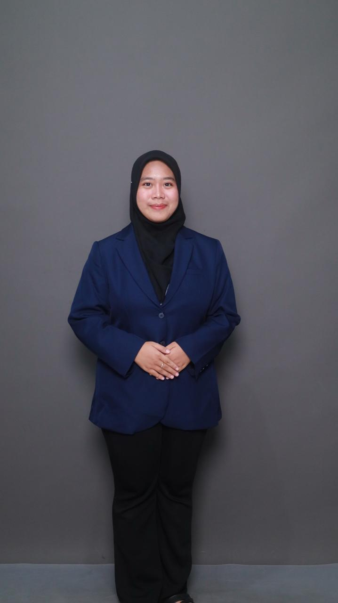

Creative Worker • IT Student
📞 0895-3832-66661 • 📧 blqsbryn@gmail.com
↓
Passionate about multimedia, design, and technology. I create visual stories, manage content, and bring ideas to life through creativity and teamwork.
I am a Creative Worker and IT student at President University. Experienced in graphic design, social media management, photography, and video directing. I love learning new things, collaborating in teams, and growing through challenges.
If you’d like to collaborate or just say hi, feel free to reach me:
📞 0895-3832-66661
📧 blqsbryn@gmail.com